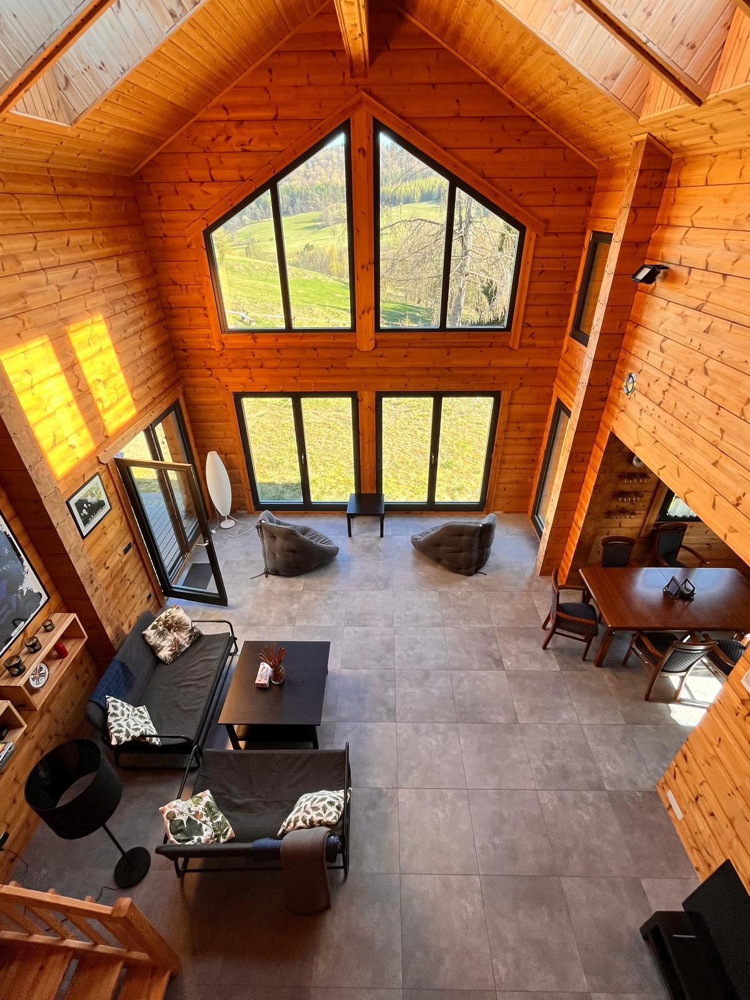

BESKID NISKI • ROPKI
Pod Kątem
Ostrym
Dom na wyłączność w Beskidzie Niskim.
Spokojne miejsce dla rodzin i grup, w otoczeniu natury.
- • dom na wyłączność
- • widok na góry i cisza wokół
- • idealny na spokojny wyjazd
- • sprawdź dostępność i ceny online
Sprawdź terminy!!
Booking.com
Kliknij ikonę Booking aby sprawdzić dostępność i ceny.
Rezerwacja bezpośrednia